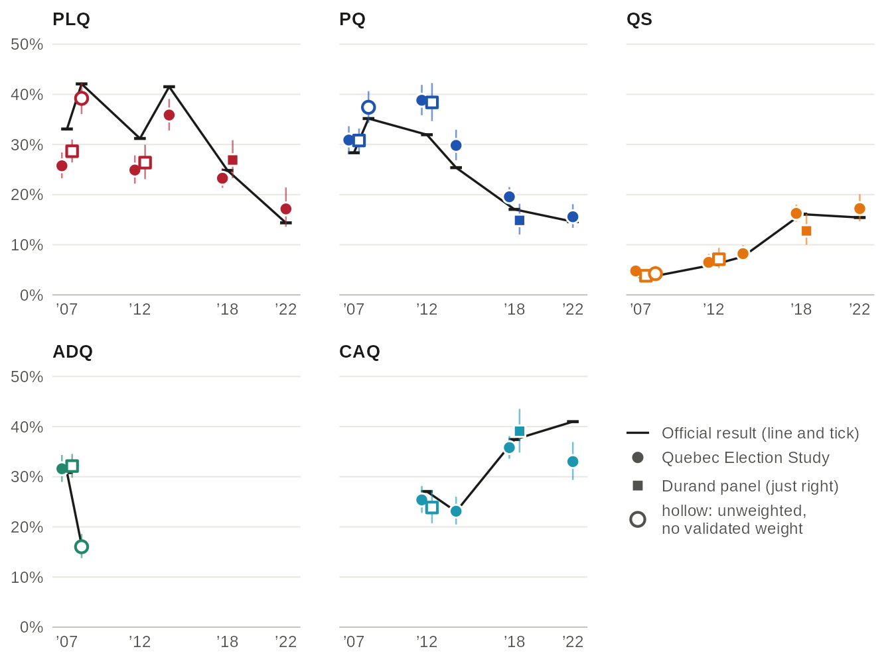
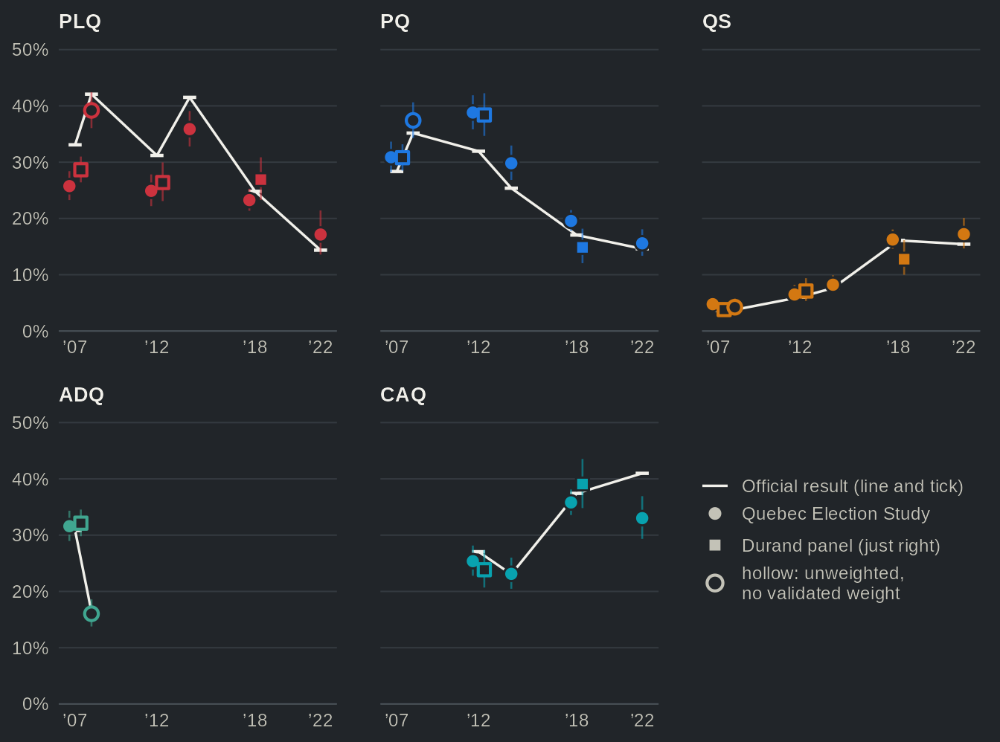
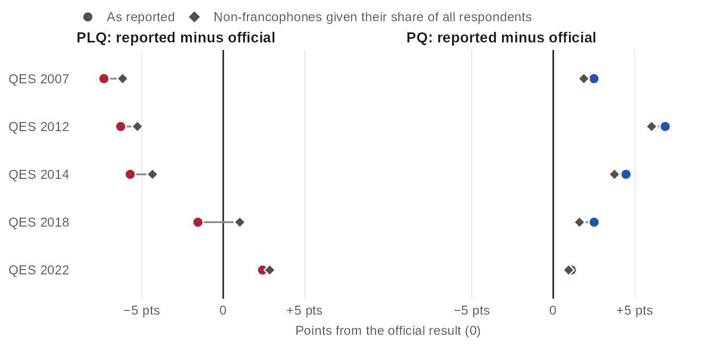
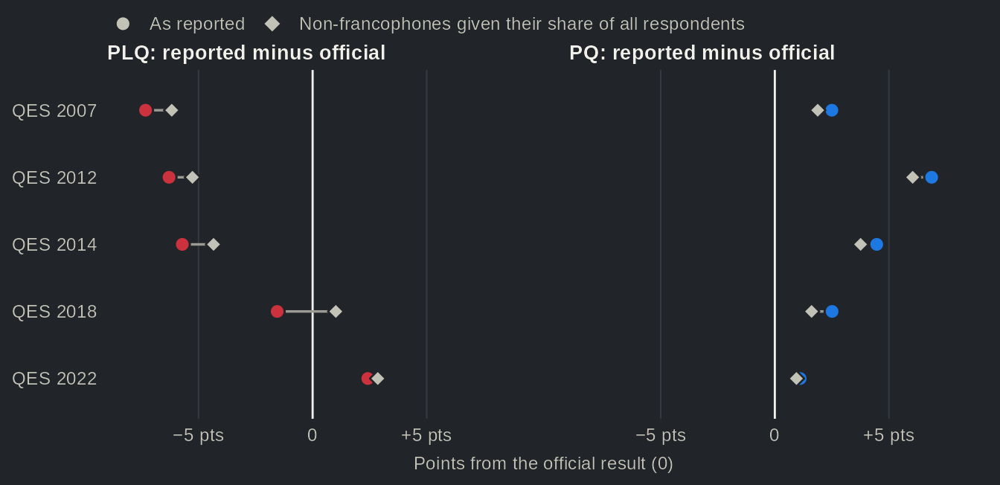
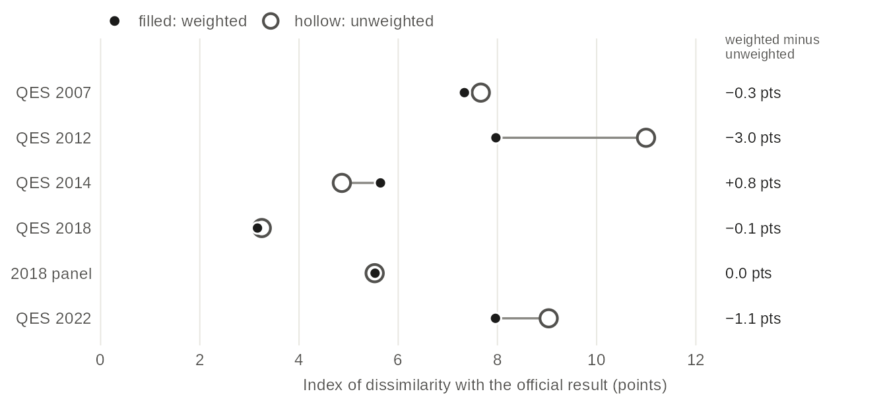
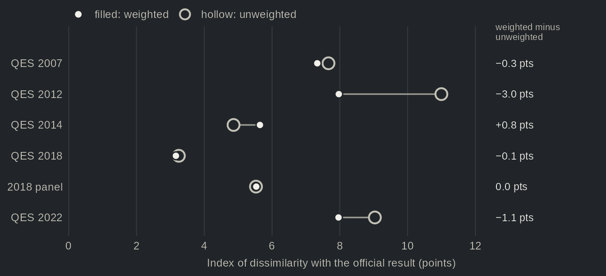
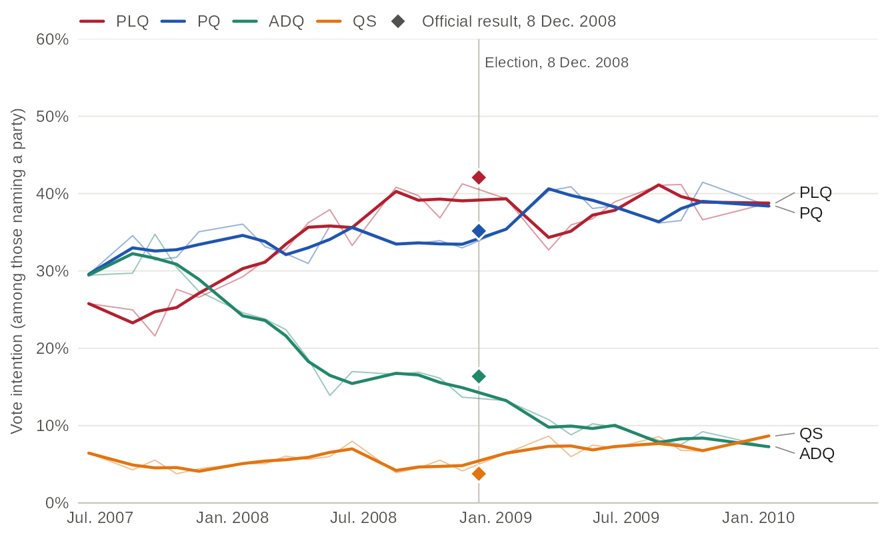
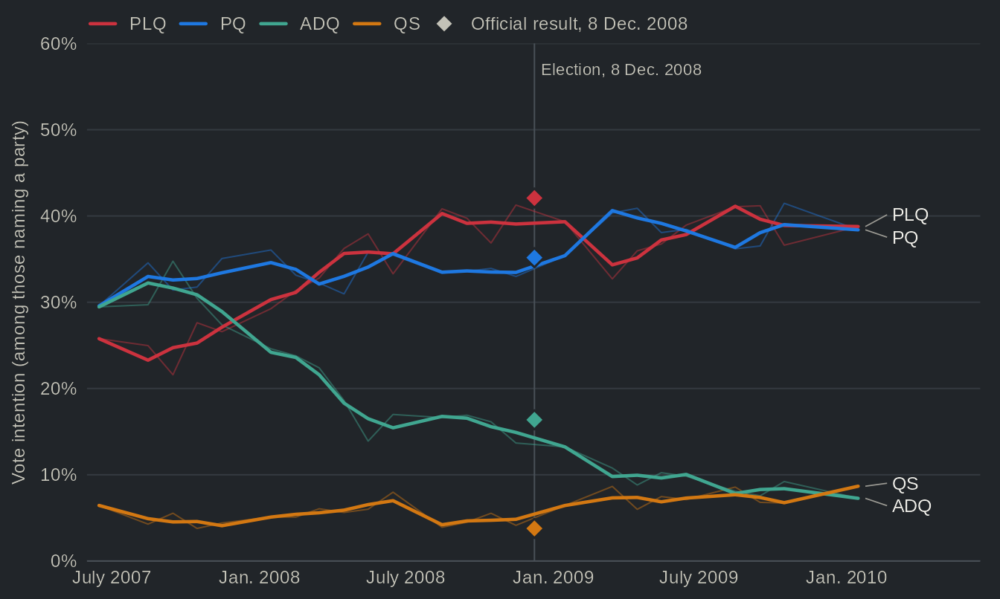

Do surveys miss the Liberals? The reported vote against the official results
Source:vignettes/articles/survey-vs-official.Rmd
survey-vs-official.RmdThis page downloads 11 studies (about 16 MB) the
first time it runs. options(qesR.cache = "disk") keeps them
on disk for later sessions.
In Quebec, it is almost a reflex to say that surveys underestimate the Parti libéral du Québec (PLQ). The polls of the 1998 election, which overestimated the Parti Québécois (PQ) and underestimated the Liberals, are the textbook case (Durand and Blais 1999). Studies in the United States point to a second and quite different bias: after the vote, more respondents say they voted for the winner than the result allows (Atkeson 1999, on the presidential primaries). Both beliefs are about polls and surveys in general. Individual studies have been checked against the result (Bélanger et al. 2025 for 2022). However, the Quebec Election Studies, which ask respondents how they voted once the election is over, have rarely been compared with the official results across several elections. We do so for six elections, from 2007 to 2022, with the six studies and the three panels that Claire Durand and her colleagues ran in 2007, 2012 and 2018. Overall, the first belief holds only in part and the second not at all. The PLQ is under-reported in all six studies and panels from 2007 to 2014, by 3 to 7 percentage points of the valid vote, and the PQ is over-reported in every Quebec Election Study, though sometimes by as little as 1 point. But the Liberal gap narrows in 2018 and is slightly reversed in 2022, within the margin of error. Nor is the winner over-reported: it falls short in five of the six elections. In 2022, the Coalition avenir Québec (CAQ) falls 8 points short.
The reported vote, party by party


Source: Quebec Election Studies (circles, just left of each election) and Durand panels (squares, just right), reported vote among respondents who named a party; official results of Élections Québec. Dots are weighted, with 95% confidence intervals. Hollow dots: unweighted, no validated weight. The table view gives every party, with the unweighted estimates.
Table view
| Party | Election | Study | Reported vote, % [95% CI] | n | Official, % of valid votes | Difference | Weighting |
|---|---|---|---|---|---|---|---|
| PLQ | 2007 | QES 2007 | 25.4 [23.4, 27.5] | 1727 | 33.1 | −7.7 pts | unweighted |
| PLQ | 2007 | QES 2007 | 25.8 [23.3, 28.4] | 1727 | 33.1 | −7.3 pts | weighted |
| PLQ | 2007 | 2007 panel | 28.6 [26.4, 31.0] | 1494 | 33.1 | −4.4 pts | unweighted: no validated weight |
| PLQ | 2008 | QES 2008 | 39.2 [36.1, 42.4] | 898 | 42.1 | −2.9 pts | unweighted: no validated weight |
| PLQ | 2012 | QES 2012 | 21.8 [19.6, 24.2] | 1274 | 31.2 | −9.4 pts | unweighted |
| PLQ | 2012 | QES 2012 | 24.9 [22.2, 27.8] | 1274 | 31.2 | −6.3 pts | weighted |
| PLQ | 2012 | 2012 panel | 26.4 [23.1, 30.0] | 633 | 31.2 | −4.8 pts | unweighted: no validated weight |
| PLQ | 2014 | QES 2014 | 38.1 [35.5, 40.8] | 1283 | 41.5 | −3.4 pts | unweighted |
| PLQ | 2014 | QES 2014 | 35.9 [32.8, 39.1] | 1283 | 41.5 | −5.6 pts | weighted |
| PLQ | 2018 | QES 2018 | 24.3 [22.5, 26.2] | 2016 | 24.8 | −0.5 pts | unweighted |
| PLQ | 2018 | QES 2018 | 23.3 [21.4, 25.3] | 2016 | 24.8 | −1.6 pts | weighted |
| PLQ | 2018 | 2018 panel | 28.4 [25.2, 31.9] | 704 | 24.8 | +3.6 pts | unweighted |
| PLQ | 2018 | 2018 panel | 26.9 [23.3, 30.9] | 704 | 24.8 | +2.1 pts | weighted |
| PLQ | 2022 | QES 2022 | 13.3 [11.4, 15.4] | 1101 | 14.4 | −1.1 pts | unweighted |
| PLQ | 2022 | QES 2022 | 17.1 [13.6, 21.4] | 1101 | 14.4 | +2.8 pts | weighted |
| PQ | 2007 | QES 2007 | 30.2 [28.0, 32.4] | 1727 | 28.3 | +1.8 pts | unweighted |
| PQ | 2007 | QES 2007 | 30.9 [28.2, 33.6] | 1727 | 28.3 | +2.5 pts | weighted |
| PQ | 2007 | 2007 panel | 30.8 [28.5, 33.2] | 1494 | 28.3 | +2.4 pts | unweighted: no validated weight |
| PQ | 2008 | QES 2008 | 37.4 [34.3, 40.6] | 898 | 35.2 | +2.2 pts | unweighted: no validated weight |
| PQ | 2012 | QES 2012 | 40.0 [37.3, 42.7] | 1274 | 31.9 | +8.0 pts | unweighted |
| PQ | 2012 | QES 2012 | 38.8 [35.8, 41.9] | 1274 | 31.9 | +6.9 pts | weighted |
| PQ | 2012 | 2012 panel | 38.4 [34.7, 42.2] | 633 | 31.9 | +6.4 pts | unweighted: no validated weight |
| PQ | 2014 | QES 2014 | 26.8 [24.5, 29.3] | 1283 | 25.4 | +1.4 pts | unweighted |
| PQ | 2014 | QES 2014 | 29.8 [26.9, 33.0] | 1283 | 25.4 | +4.4 pts | weighted |
| PQ | 2018 | QES 2018 | 19.4 [17.8, 21.2] | 2016 | 17.1 | +2.4 pts | unweighted |
| PQ | 2018 | QES 2018 | 19.6 [17.8, 21.5] | 2016 | 17.1 | +2.5 pts | weighted |
| PQ | 2018 | 2018 panel | 15.3 [12.9, 18.2] | 704 | 17.1 | −1.7 pts | unweighted |
| PQ | 2018 | 2018 panel | 14.9 [12.1, 18.2] | 704 | 17.1 | −2.2 pts | weighted |
| PQ | 2022 | QES 2022 | 18.7 [16.5, 21.1] | 1101 | 14.6 | +4.1 pts | unweighted |
| PQ | 2022 | QES 2022 | 15.6 [13.4, 18.1] | 1101 | 14.6 | +1.0 pts | weighted |
| ADQ | 2007 | QES 2007 | 33.8 [31.6, 36.0] | 1727 | 30.8 | +2.9 pts | unweighted |
| ADQ | 2007 | QES 2007 | 31.6 [29.0, 34.3] | 1727 | 30.8 | +0.8 pts | weighted |
| ADQ | 2007 | 2007 panel | 32.1 [29.8, 34.5] | 1494 | 30.8 | +1.3 pts | unweighted: no validated weight |
| ADQ | 2008 | QES 2008 | 16.0 [13.8, 18.6] | 898 | 16.4 | −0.3 pts | unweighted: no validated weight |
| QS | 2007 | QES 2007 | 4.3 [3.5, 5.4] | 1727 | 3.6 | +0.7 pts | unweighted |
| QS | 2007 | QES 2007 | 4.8 [3.6, 6.2] | 1727 | 3.6 | +1.1 pts | weighted |
| QS | 2007 | 2007 panel | 3.8 [3.0, 4.9] | 1494 | 3.6 | +0.2 pts | unweighted: no validated weight |
| QS | 2008 | QES 2008 | 4.2 [3.1, 5.8] | 898 | 3.8 | +0.5 pts | unweighted: no validated weight |
| QS | 2012 | QES 2012 | 7.5 [6.2, 9.1] | 1274 | 6.0 | +1.5 pts | unweighted |
| QS | 2012 | QES 2012 | 6.5 [5.1, 8.2] | 1274 | 6.0 | +0.5 pts | weighted |
| QS | 2012 | 2012 panel | 7.1 [5.3, 9.4] | 633 | 6.0 | +1.1 pts | unweighted: no validated weight |
| QS | 2014 | QES 2014 | 10.2 [8.7, 12.0] | 1283 | 7.6 | +2.6 pts | unweighted |
| QS | 2014 | QES 2014 | 8.2 [6.8, 9.9] | 1283 | 7.6 | +0.6 pts | weighted |
| QS | 2018 | QES 2018 | 17.0 [15.4, 18.7] | 2016 | 16.1 | +0.9 pts | unweighted |
| QS | 2018 | QES 2018 | 16.3 [14.6, 18.0] | 2016 | 16.1 | +0.1 pts | weighted |
| QS | 2018 | 2018 panel | 12.4 [10.1, 15.0] | 704 | 16.1 | −3.7 pts | unweighted |
| QS | 2018 | 2018 panel | 12.8 [10.0, 16.2] | 704 | 16.1 | −3.3 pts | weighted |
| QS | 2022 | QES 2022 | 19.0 [16.8, 21.4] | 1101 | 15.4 | +3.6 pts | unweighted |
| QS | 2022 | QES 2022 | 17.2 [14.7, 20.1] | 1101 | 15.4 | +1.8 pts | weighted |
| CAQ | 2012 | QES 2012 | 25.4 [23.1, 27.9] | 1274 | 27.1 | −1.6 pts | unweighted |
| CAQ | 2012 | QES 2012 | 25.4 [22.8, 28.1] | 1274 | 27.1 | −1.7 pts | weighted |
| CAQ | 2012 | 2012 panel | 23.9 [20.7, 27.3] | 633 | 27.1 | −3.2 pts | unweighted: no validated weight |
| CAQ | 2014 | QES 2014 | 21.6 [19.4, 23.9] | 1283 | 23.1 | −1.5 pts | unweighted |
| CAQ | 2014 | QES 2014 | 23.1 [20.5, 26.0] | 1283 | 23.1 | +0.1 pts | weighted |
| CAQ | 2018 | QES 2018 | 34.7 [32.7, 36.8] | 2016 | 37.4 | −2.7 pts | unweighted |
| CAQ | 2018 | QES 2018 | 35.8 [33.6, 38.1] | 2016 | 37.4 | −1.6 pts | weighted |
| CAQ | 2018 | 2018 panel | 37.4 [33.9, 41.0] | 704 | 37.4 | −0.1 pts | unweighted |
| CAQ | 2018 | 2018 panel | 39.1 [34.8, 43.5] | 704 | 37.4 | +1.7 pts | weighted |
| CAQ | 2022 | QES 2022 | 33.1 [30.3, 35.9] | 1101 | 41.0 | −7.9 pts | unweighted |
| CAQ | 2022 | QES 2022 | 33.0 [29.3, 36.9] | 1101 | 41.0 | −8.0 pts | weighted |
| PCQ | 2012 | QES 2012 | n.l. | 1274 | unweighted | ||
| PCQ | 2012 | QES 2012 | n.l. | 1274 | weighted | ||
| PCQ | 2012 | 2012 panel | n.l. | 633 | unweighted: no validated weight | ||
| PCQ | 2014 | QES 2014 | n.l. | 1283 | unweighted | ||
| PCQ | 2014 | QES 2014 | n.l. | 1283 | weighted | ||
| PCQ | 2018 | QES 2018 | n.l. | 2016 | unweighted | ||
| PCQ | 2018 | QES 2018 | n.l. | 2016 | weighted | ||
| PCQ | 2018 | 2018 panel | n.l. | 704 | unweighted | ||
| PCQ | 2018 | 2018 panel | n.l. | 704 | weighted | ||
| PCQ | 2022 | QES 2022 | 13.2 [11.3, 15.3] | 1101 | 12.9 | +0.3 pts | unweighted |
| PCQ | 2022 | QES 2022 | 13.5 [11.3, 16.2] | 1101 | 12.9 | +0.6 pts | weighted |
| Other | 2007 | QES 2007 | 6.3 [5.3, 7.6] | 1727 | 4.1 | +2.2 pts | unweighted |
| Other | 2007 | QES 2007 | 7.0 [5.6, 8.8] | 1727 | 4.1 | +2.9 pts | weighted |
| Other | 2007 | 2007 panel | 4.6 [3.7, 5.8] | 1494 | 4.1 | +0.5 pts | unweighted: no validated weight |
| Other | 2008 | QES 2008 | 3.1 [2.2, 4.5] | 898 | 2.6 | +0.5 pts | unweighted: no validated weight |
| Other | 2012 | QES 2012 | 5.3 [4.2, 6.6] | 1274 | 3.8 | +1.5 pts | unweighted |
| Other | 2012 | QES 2012 | 4.4 [3.4, 5.7] | 1274 | 3.8 | +0.6 pts | weighted |
| Other | 2012 | 2012 panel | 4.3 [2.9, 6.1] | 633 | 3.8 | +0.5 pts | unweighted: no validated weight |
| Other | 2014 | QES 2014 | 3.3 [2.4, 4.4] | 1283 | 2.4 | +0.9 pts | unweighted |
| Other | 2014 | QES 2014 | 3.0 [2.1, 4.2] | 1283 | 2.4 | +0.5 pts | weighted |
| Other | 2018 | QES 2018 | 4.6 [3.7, 5.6] | 2016 | 4.6 | 0.0 pts | unweighted |
| Other | 2018 | QES 2018 | 5.1 [4.1, 6.3] | 2016 | 4.6 | +0.5 pts | weighted |
| Other | 2018 | 2018 panel | 6.5 [4.9, 8.6] | 704 | 4.6 | +1.9 pts | unweighted |
| Other | 2018 | 2018 panel | 6.4 [4.5, 9.0] | 704 | 4.6 | +1.8 pts | weighted |
| Other | 2022 | QES 2022 | 2.8 [2.0, 4.0] | 1101 | 1.7 | +1.1 pts | unweighted |
| Other | 2022 | QES 2022 | 3.5 [2.0, 6.1] | 1101 | 1.7 | +1.8 pts | weighted |
First, the Liberals. From 2007 to 2014 the PLQ is under-reported in all six studies and panels, by as much as 7 points in 2007 and 6 points in 2014, the year it returned to power with 42% of the vote. The pattern then fades. The 2018 study puts the PLQ 2 points below its result, and the 2022 study puts it 3 points above. Second, the PQ is over-reported in every Quebec Election Study, by as little as 1 point in 2022 and as much as 7 points in 2012 (39% reported against 32% official). Taken one at a time, several of these gaps are within the margin of error: the PQ’s in 2007, 2008 and 2022, and the PLQ’s in 2008, 2018 and 2022.
Third, and contrary to what the literature on post-election surveys would lead us to expect, the winner is rarely over-reported. The only exception is 2012, when the PQ won. In 2008 and 2018, the winner’s shortfall is within the margin of error. Not so in 2022: the CAQ took 41% of the vote, but only 33% of the study’s respondents say they voted for it, a shortfall Bélanger et al. (2025) also report with the same study (33.7% against 41%). Not every 2022 party is off, however: the Parti conservateur du Québec (PCQ) is close to its result (14% against 13%), as they also find. What stands out is the direction of the errors. From 2007 to 2014 at least, they are not random noise around the result: they lean the same way for the same parties.
Is the Liberal gap a language gap?
The most familiar explanation for the Liberal gap is language. Non-francophones vote Liberal in very large numbers: in 2014, 87% of the non-francophones who reported a vote chose the PLQ, against 25% of francophones. A survey that reaches too few of them will under-report the party. The studies are weighted, among other things, on language, so non-francophones should make up roughly their share of the census population among all respondents. Among those who report a vote, however, they are fewer: 17% in 2014, against 19% of all respondents. We therefore examine what happens when non-francophones among voters are given back the share they have among all respondents. This is a generous test, since it assumes they name a party as often as francophones do.


Source: Quebec Election Studies, weighted, respondents whose mother tongue (or, where it is missing or mixed, home language) is known; official results of Élections Québec. Francophones: French mother tongue. Rebalanced: the respondents who reported a vote are weighted again so that non-francophones make up the same share as among all respondents; the vote of each language group is unchanged. The 2008 study, whose weights are calibrated on the vote, is left out. The table view gives the vote of each group and the share of non-francophones among voters that would have matched the PLQ's result.
Table view
| Party | Study | Reported, % | Rebalanced, % | Official, % | Gap as reported | Gap rebalanced | Among francophones, % | Among non-francophones, % | Non-francophones among voters, % | Non-francophones among all respondents, % | Non-francophone share that would match the PLQ result, % | n |
|---|---|---|---|---|---|---|---|---|---|---|---|---|
| PLQ | QES 2007 | 25.8 | 26.9 | 33.1 | −7.3 pts | −6.2 pts | 20.3 | 58.1 | 14.5 | 17.6 | 33.9 | 1726 |
| PLQ | QES 2012 | 24.9 | 25.9 | 31.2 | −6.3 pts | −5.3 pts | 15.5 | 65.5 | 18.8 | 20.9 | 31.4 | 1274 |
| PLQ | QES 2014 | 35.8 | 37.2 | 41.5 | −5.7 pts | −4.3 pts | 25.2 | 87.3 | 17.1 | 19.3 | 26.3 | 1282 |
| PLQ | QES 2018 | 23.3 | 25.8 | 24.8 | −1.6 pts | +1.0 pts | 12.2 | 71.6 | 18.6 | 22.9 | 21.2 | 2016 |
| PLQ | QES 2022 | 16.8 | 17.2 | 14.4 | +2.4 pts | +2.9 pts | 6.1 | 54.5 | 22.1 | 23.0 | 17.1 | 1056 |
| PQ | QES 2007 | 30.8 | 30.2 | 28.3 | +2.5 pts | +1.9 pts | 33.8 | 13.4 | 14.5 | 17.6 | 1726 | |
| PQ | QES 2012 | 38.8 | 38.0 | 31.9 | +6.9 pts | +6.0 pts | 46.4 | 6.0 | 18.8 | 20.9 | 1274 | |
| PQ | QES 2014 | 29.8 | 29.1 | 25.4 | +4.5 pts | +3.8 pts | 35.3 | 3.2 | 17.1 | 19.3 | 1282 | |
| PQ | QES 2018 | 19.6 | 18.7 | 17.1 | +2.5 pts | +1.6 pts | 23.4 | 2.6 | 18.6 | 22.9 | 2016 | |
| PQ | QES 2022 | 15.7 | 15.6 | 14.6 | +1.1 pts | +0.9 pts | 19.7 | 1.7 | 22.1 | 23.0 | 1056 |
The answer is fairly clear: language accounts for a small part of the gap. In the three weighted Quebec Election Studies of 2007, 2012 and 2014, where the Liberal gap is 6 to 7 points, rebalancing closes 1.0 to 1.4 points of it, and trims the PQ’s excess by 0.6 to 0.8 points. To close the PLQ gap through language alone, non-francophones would have had to make up 26% to 34% of voters, against 18% to 21% of all respondents. In other words, the Liberal gap is not only a matter of too few non-francophones. This suggests that it is also a gap within language groups, most likely among francophones: in these studies, either Liberal voters are missing from the samples, or they do not say they voted Liberal. In 2018, by contrast, the same correction takes the PLQ slightly past its result (+1.0 point). The gap was small that year, and language composition may account for most of it.
Does weighting help?


Source: Quebec Election Studies and Durand panels, reported vote; official results of Élections Québec. Index of dissimilarity: half the sum, over parties, of the absolute difference between the reported and the official share, in points. It is the share of respondents who would have to change party for the survey to match the result (0: identical). A party a study did not list counts in its Other. The studies without a validated weight (2008, and the 2007 and 2012 panels) are in the table view.
Table view
| Election | Study | Weighting | Index of dissimilarity (points) |
|---|---|---|---|
| 2007 | QES 2007 | unweighted | 7.7 |
| 2007 | QES 2007 | weighted | 7.3 |
| 2007 | 2007 panel | unweighted | 4.4 |
| 2008 | QES 2008 | unweighted | 3.2 |
| 2012 | QES 2012 | unweighted | 11.0 |
| 2012 | QES 2012 | weighted | 8.0 |
| 2012 | 2012 panel | unweighted | 8.0 |
| 2014 | QES 2014 | unweighted | 4.9 |
| 2014 | QES 2014 | weighted | 5.6 |
| 2018 | QES 2018 | unweighted | 3.2 |
| 2018 | QES 2018 | weighted | 3.2 |
| 2018 | 2018 panel | unweighted | 5.5 |
| 2018 | 2018 panel | weighted | 5.5 |
| 2022 | QES 2022 | unweighted | 9.0 |
| 2022 | QES 2022 | weighted | 8.0 |
If language explains little, weighting cannot be expected to do much either, since it adjusts the sample to the census and not to the vote. The index of dissimilarity lets us check: it is the share of respondents who would have to change party for the survey to match the result. Weighting brings 2012 and 2022 closer to the result, by 3.0 and 1.1 points, and moves 2014 slightly away. Note, however, that the index stays between 3.2 and 8.0 points in the weighted studies, and that two unweighted studies, the 2008 study and the 2007 panel, come closer than most of them (3.2 and 4.4 points). A weight based on census totals, then, does not by itself make a study’s reported vote more accurate.
Before the vote: how far intentions move


Source: CROP polls, vote intention (with the undecided asked which party they lean towards, where the poll asked it), about 850 respondents a month, among those who named a party; official results of Élections Québec (diamonds). Unweighted: no validated weight. By design, the polls over-sampled the Québec City area (20% of respondents, about twice its share of the population), so these shares give it too much weight. Bold lines: the mean of the polls within a month and a half of each poll; faint lines: each month. The 95% confidence intervals of every poll are in the table view.
Table view
| Poll (month) | Party | Intention, % [95% CI] | n |
|---|---|---|---|
| 2007-06 | PLQ | 25.8 [23.0, 28.8] | 869 |
| 2007-06 | PQ | 29.6 [26.6, 32.7] | 869 |
| 2007-06 | ADQ | 29.5 [26.5, 32.6] | 869 |
| 2007-06 | QS | 6.4 [5.0, 8.3] | 869 |
| 2007-06 | CAQ | — | |
| 2007-06 | PCQ | — | |
| 2007-06 | Other | 8.7 [7.0, 10.8] | 869 |
| 2007-08 | PLQ | 25.0 [22.2, 28.0] | 865 |
| 2007-08 | PQ | 34.6 [31.5, 37.8] | 865 |
| 2007-08 | ADQ | 29.7 [26.8, 32.8] | 865 |
| 2007-08 | QS | 4.3 [3.1, 5.8] | 865 |
| 2007-08 | CAQ | — | |
| 2007-08 | PCQ | — | |
| 2007-08 | Other | 6.5 [5.0, 8.3] | 865 |
| 2007-09 | PLQ | 21.6 [19.0, 24.5] | 866 |
| 2007-09 | PQ | 31.4 [28.4, 34.6] | 866 |
| 2007-09 | ADQ | 34.8 [31.7, 38.0] | 866 |
| 2007-09 | QS | 5.5 [4.2, 7.3] | 866 |
| 2007-09 | CAQ | — | |
| 2007-09 | PCQ | — | |
| 2007-09 | Other | 6.7 [5.2, 8.6] | 866 |
| 2007-10 | PLQ | 27.6 [24.7, 30.7] | 847 |
| 2007-10 | PQ | 31.8 [28.7, 35.0] | 847 |
| 2007-10 | ADQ | 30.5 [27.5, 33.6] | 847 |
| 2007-10 | QS | 3.8 [2.7, 5.3] | 847 |
| 2007-10 | CAQ | — | |
| 2007-10 | PCQ | — | |
| 2007-10 | Other | 6.4 [4.9, 8.2] | 847 |
| 2007-11 | PLQ | 26.6 [23.8, 29.6] | 884 |
| 2007-11 | PQ | 35.1 [32.0, 38.3] | 884 |
| 2007-11 | ADQ | 27.4 [24.5, 30.4] | 884 |
| 2007-11 | QS | 4.4 [3.2, 6.0] | 884 |
| 2007-11 | CAQ | — | |
| 2007-11 | PCQ | — | |
| 2007-11 | Other | 6.6 [5.1, 8.4] | 884 |
| 2008-01 | PLQ | 29.3 [26.3, 32.3] | 882 |
| 2008-01 | PQ | 36.1 [32.9, 39.3] | 882 |
| 2008-01 | ADQ | 24.6 [21.9, 27.6] | 882 |
| 2008-01 | QS | 5.1 [3.8, 6.8] | 882 |
| 2008-01 | CAQ | — | |
| 2008-01 | PCQ | — | |
| 2008-01 | Other | 5.0 [3.7, 6.6] | 882 |
| 2008-02 | PLQ | 31.4 [28.3, 34.6] | 845 |
| 2008-02 | PQ | 33.1 [30.0, 36.4] | 845 |
| 2008-02 | ADQ | 23.8 [21.0, 26.8] | 845 |
| 2008-02 | QS | 5.1 [3.8, 6.8] | 845 |
| 2008-02 | CAQ | — | |
| 2008-02 | PCQ | — | |
| 2008-02 | Other | 6.6 [5.1, 8.5] | 845 |
| 2008-03 | PLQ | 32.8 [29.8, 36.0] | 875 |
| 2008-03 | PQ | 32.2 [29.2, 35.4] | 875 |
| 2008-03 | ADQ | 22.4 [19.8, 25.3] | 875 |
| 2008-03 | QS | 6.1 [4.7, 7.8] | 875 |
| 2008-03 | CAQ | — | |
| 2008-03 | PCQ | — | |
| 2008-03 | Other | 6.5 [5.1, 8.4] | 875 |
| 2008-04 | PLQ | 36.2 [33.0, 39.6] | 817 |
| 2008-04 | PQ | 31.0 [27.9, 34.2] | 817 |
| 2008-04 | ADQ | 18.6 [16.1, 21.4] | 817 |
| 2008-04 | QS | 5.6 [4.2, 7.4] | 817 |
| 2008-04 | CAQ | — | |
| 2008-04 | PCQ | — | |
| 2008-04 | Other | 8.6 [6.8, 10.7] | 817 |
| 2008-05 | PLQ | 37.9 [34.7, 41.2] | 849 |
| 2008-05 | PQ | 35.8 [32.6, 39.1] | 849 |
| 2008-05 | ADQ | 13.9 [11.7, 16.4] | 849 |
| 2008-05 | QS | 6.0 [4.6, 7.8] | 849 |
| 2008-05 | CAQ | — | |
| 2008-05 | PCQ | — | |
| 2008-05 | Other | 6.4 [4.9, 8.2] | 849 |
| 2008-06 | PLQ | 33.3 [30.3, 36.5] | 877 |
| 2008-06 | PQ | 35.5 [32.4, 38.7] | 877 |
| 2008-06 | ADQ | 17.0 [14.6, 19.6] | 877 |
| 2008-06 | QS | 8.0 [6.4, 10.0] | 877 |
| 2008-06 | CAQ | — | |
| 2008-06 | PCQ | — | |
| 2008-06 | Other | 6.3 [4.8, 8.1] | 877 |
| 2008-08 | PLQ | 40.8 [37.5, 44.2] | 818 |
| 2008-08 | PQ | 33.4 [30.2, 36.7] | 818 |
| 2008-08 | ADQ | 16.6 [14.2, 19.3] | 818 |
| 2008-08 | QS | 3.9 [2.8, 5.5] | 818 |
| 2008-08 | CAQ | — | |
| 2008-08 | PCQ | — | |
| 2008-08 | Other | 5.3 [3.9, 7.0] | 818 |
| 2008-09 | PLQ | 39.7 [36.6, 43.0] | 911 |
| 2008-09 | PQ | 33.6 [30.6, 36.7] | 911 |
| 2008-09 | ADQ | 16.9 [14.6, 19.5] | 911 |
| 2008-09 | QS | 4.5 [3.3, 6.1] | 911 |
| 2008-09 | CAQ | — | |
| 2008-09 | PCQ | — | |
| 2008-09 | Other | 5.3 [4.0, 6.9] | 911 |
| 2008-10 | PLQ | 36.9 [33.7, 40.2] | 849 |
| 2008-10 | PQ | 33.9 [30.8, 37.2] | 849 |
| 2008-10 | ADQ | 16.1 [13.8, 18.8] | 849 |
| 2008-10 | QS | 5.5 [4.2, 7.3] | 849 |
| 2008-10 | CAQ | — | |
| 2008-10 | PCQ | — | |
| 2008-10 | Other | 7.5 [5.9, 9.5] | 849 |
| 2008-11 | PLQ | 41.3 [38.0, 44.6] | 870 |
| 2008-11 | PQ | 33.0 [29.9, 36.2] | 870 |
| 2008-11 | ADQ | 13.7 [11.5, 16.1] | 870 |
| 2008-11 | QS | 4.1 [3.0, 5.7] | 870 |
| 2008-11 | CAQ | — | |
| 2008-11 | PCQ | — | |
| 2008-11 | Other | 7.9 [6.3, 9.9] | 870 |
| 2009-01 | PLQ | 39.3 [36.1, 42.7] | 839 |
| 2009-01 | PQ | 35.4 [32.2, 38.7] | 839 |
| 2009-01 | ADQ | 13.2 [11.1, 15.7] | 839 |
| 2009-01 | QS | 6.4 [5.0, 8.3] | 839 |
| 2009-01 | CAQ | — | |
| 2009-01 | PCQ | — | |
| 2009-01 | Other | 5.6 [4.2, 7.4] | 839 |
| 2009-03 | PLQ | 32.7 [29.5, 36.0] | 798 |
| 2009-03 | PQ | 40.4 [37.0, 43.8] | 798 |
| 2009-03 | ADQ | 10.8 [8.8, 13.1] | 798 |
| 2009-03 | QS | 8.6 [6.9, 10.8] | 798 |
| 2009-03 | CAQ | — | |
| 2009-03 | PCQ | — | |
| 2009-03 | Other | 7.5 [5.9, 9.6] | 798 |
| 2009-04 | PLQ | 36.0 [32.8, 39.2] | 851 |
| 2009-04 | PQ | 40.9 [37.6, 44.2] | 851 |
| 2009-04 | ADQ | 8.8 [7.1, 10.9] | 851 |
| 2009-04 | QS | 6.0 [4.6, 7.8] | 851 |
| 2009-04 | CAQ | — | |
| 2009-04 | PCQ | — | |
| 2009-04 | Other | 8.3 [6.7, 10.4] | 851 |
| 2009-05 | PLQ | 36.7 [33.5, 40.1] | 830 |
| 2009-05 | PQ | 38.1 [34.8, 41.4] | 830 |
| 2009-05 | ADQ | 10.2 [8.4, 12.5] | 830 |
| 2009-05 | QS | 7.5 [5.9, 9.5] | 830 |
| 2009-05 | CAQ | — | |
| 2009-05 | PCQ | — | |
| 2009-05 | Other | 7.5 [5.9, 9.5] | 830 |
| 2009-06 | PLQ | 38.9 [35.6, 42.3] | 814 |
| 2009-06 | PQ | 38.5 [35.2, 41.8] | 814 |
| 2009-06 | ADQ | 9.8 [8.0, 12.1] | 814 |
| 2009-06 | QS | 7.1 [5.5, 9.1] | 814 |
| 2009-06 | CAQ | — | |
| 2009-06 | PCQ | — | |
| 2009-06 | Other | 5.7 [4.3, 7.5] | 814 |
| 2009-08 | PLQ | 41.1 [37.8, 44.4] | 840 |
| 2009-08 | PQ | 36.2 [33.0, 39.5] | 840 |
| 2009-08 | ADQ | 8.1 [6.4, 10.1] | 840 |
| 2009-08 | QS | 8.6 [6.9, 10.7] | 840 |
| 2009-08 | CAQ | — | |
| 2009-08 | PCQ | — | |
| 2009-08 | Other | 6.1 [4.6, 7.9] | 840 |
| 2009-09 | PLQ | 41.2 [37.8, 44.6] | 794 |
| 2009-09 | PQ | 36.5 [33.2, 39.9] | 794 |
| 2009-09 | ADQ | 7.6 [5.9, 9.6] | 794 |
| 2009-09 | QS | 6.8 [5.2, 8.8] | 794 |
| 2009-09 | CAQ | — | |
| 2009-09 | PCQ | — | |
| 2009-09 | Other | 7.9 [6.2, 10.0] | 794 |
| 2009-10 | PLQ | 36.6 [33.3, 40.0] | 803 |
| 2009-10 | PQ | 41.5 [38.1, 44.9] | 803 |
| 2009-10 | ADQ | 9.2 [7.4, 11.4] | 803 |
| 2009-10 | QS | 6.7 [5.2, 8.7] | 803 |
| 2009-10 | CAQ | — | |
| 2009-10 | PCQ | — | |
| 2009-10 | Other | 6.0 [4.5, 7.8] | 803 |
| 2010-01 | PLQ | 38.8 [35.4, 42.2] | 784 |
| 2010-01 | PQ | 38.4 [35.0, 41.9] | 784 |
| 2010-01 | ADQ | 7.3 [5.6, 9.3] | 784 |
| 2010-01 | QS | 8.7 [6.9, 10.9] | 784 |
| 2010-01 | CAQ | — | |
| 2010-01 | PCQ | — | |
| 2010-01 | Other | 6.9 [5.3, 8.9] | 784 |
A post-election study has one advantage over a poll: the vote it asks about has already happened. Durand and Blais (2020) make the distinction between a polling miss, when voters move after the last poll or the undecided break unevenly, and a poll failure, when the method is at fault. The monthly CROP polls show why the distinction matters. Between June 2007 and November 2008, the Action démocratique du Québec (ADQ), then the official opposition, went from 29% to 14% of vote intentions, and the PQ was back ahead of the PLQ in June 2008 (35% against 33%). The last poll before the election, in November 2008, had the PLQ at 41%; it took 42%, within the poll’s margin of error. The 2008 study, which asked respondents how they voted after the election and is also unweighted, puts the PLQ at 39%, further from the result than the last poll. Since it was fielded after the vote, late movement cannot explain that gap, small as it is. It comes from who answers and from what they say.
In sum
The belief that surveys underestimate the Liberals holds for the Quebec Election Studies from 2007 to 2014, but not after, and language, the usual suspect, accounts for 1.0 to 1.4 points of it. The PQ is over-reported in most studies, and the winner is more often under-reported than over-reported. Our analysis is not without limits. First, the reported vote is a recall, measured among respondents who named a party. Second, a study of 1,278 voters (the median of the six studies) has a margin of error of up to 2.7 points on each party before weighting, and close to 4 once the weights are taken into account, as the intervals in the table views show. More importantly, the comparison with official results cannot tell apart the two sources of error: voters who do not take part in the survey, and respondents who do not report their vote as cast. In Britain, the main cause of the 2015 polling error was unrepresentative samples (Sturgis et al. 2018), as it was in Quebec in 1998 (Durand and Blais 1999); nothing here allows us to say whether it still is. The open question is whether the CAQ’s shortfall in 2022 is a one-off, or whether its voters now play the part that Liberal voters long played: that of an electorate less inclined to answer surveys.
Further reading
- Atkeson, Lonna Rae. 1999. “‘Sure, I Voted for the Winner!’ Overreport of the Primary Vote for the Party Nominee in the National Election Studies.” Political Behavior 21 (3): 197–215. doi:10.1023/A:1022031432535
- Bélanger, Éric, Philippe Mongrain, Thomas Gareau-Paquette, and Valérie-Anne Mahéo. 2025. “A Party that Went Viral? The Drivers of Support for the Parti Conservateur du Québec in the 2022 Election.” Canadian Journal of Political Science 58 (2): 277–296. doi:10.1017/S0008423924000829 (the 2022 study: the CAQ under-represented, the PCQ close to its result)
- Durand, Claire, and André Blais. 1999. “Why Did the Polls Go Wrong in the 1998 Quebec Election? The Answer from Post-Election Polls.” Bulletin of Sociological Methodology 62 (1): 43–47. doi:10.1177/075910639906200105
- Durand, Claire, and André Blais. 2020. “Quebec 2018: A Failure of the Polls?” Canadian Journal of Political Science 53 (1): 133–150. doi:10.1017/S0008423919000787
- Sturgis, Patrick, Jouni Kuha, Nick Baker, Mario Callegaro, Stephen Fisher, Jane Green, Will Jennings, Benjamin E. Lauderdale, and Patten Smith. 2018. “An Assessment of the Causes of the Errors in the 2015 UK General Election Opinion Polls.” Journal of the Royal Statistical Society: Series A 181 (3): 757–781. doi:10.1111/rssa.12329
On this site, From two parties to four follows the vote of francophones and non-francophones since 1998, and Validation against official results runs these comparisons for every study.
About the data
- Studies. The six Quebec Election Studies (2007 to 2022) and the three Durand panels (2007, 2012, 2018), which asked respondents how they voted after the election. The 1998 polls interviewed francophones only and are left out. The 24 CROP polls, conducted almost every month from June 2007 to January 2010, measure vote intention instead.
- Shares. Among respondents who named a party. Those who did not vote, did not know or refused to answer are left out. The Green Party, Option nationale and the smaller parties count as “Other”, and so does a party a study did not list.
- Official results. Each party’s share of valid votes, from Élections Québec.
- Weights. Each study’s post-election weight, where it has a validated one (see the weights table); the others are shown unweighted, as hollow dots in the charts. The 2008 study’s only weights are calibrated on the vote itself, so they could not test the reported vote in any case.
- Language. Francophones are respondents whose mother tongue is French. Where the mother tongue is missing or mixed, the language spoken at home is used instead.
The data on this page come from one call:
h <- qes_harmonize(
studies = c("qes1998", "qes2007", "qes2007_panel", "qes2008", "qes_crop_2007_2010", "qes2012",
"qes2012_panel", "qes2014", "qes2018", "qes2018_panel", "qes2022"),
targets = c("vote_choice", "lang_mother", "lang_home"),
missing = "reasons", quiet = TRUE
)